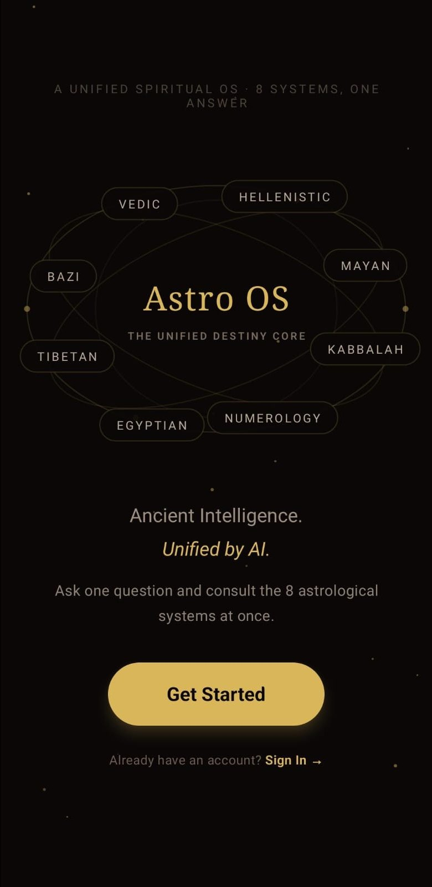
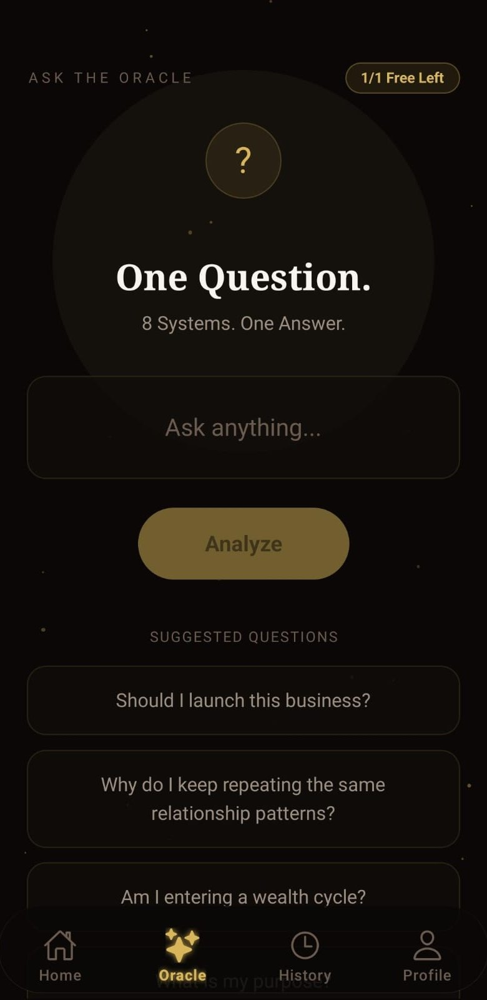

iOS & Android


01
Astro OS
Store · Soon
Most astrology apps give you one interpretation. Astro OS runs your birth data through eight systems at once, from Vedic to BaZi to Numerology, and has an AI layer merge them into a single answer. Comes with a daily Clarity Score, an Oracle for plain-English questions, and a Pro tier for the full reading archive. Built solo, end to end, in React Native.